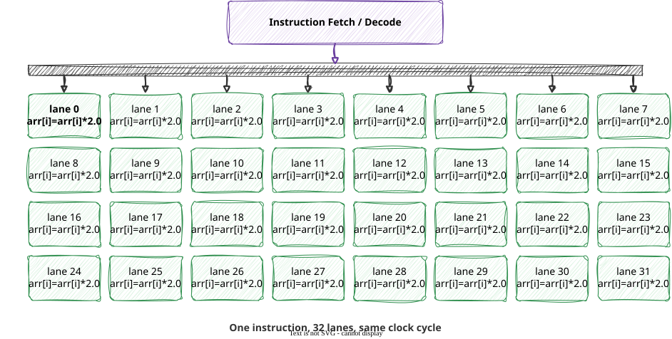
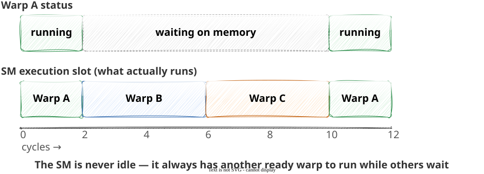
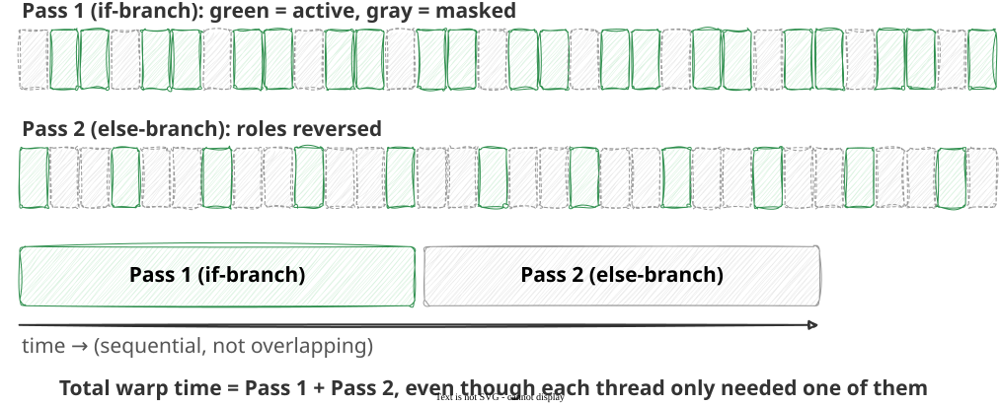

Module 2: CUDA Kernels
threadIdx.x values 0-31 form warp 0, values 32-63 form warp 1, and so on within a block
256 / 32 = 8 warps
Suppose an SM supports a maximum of 1536 resident threads (a realistic hardware limit), and you launch blocks of 256 threads.
Now suppose you instead launch blocks of 300 threads — an awkward, non-power-of-2 size:
if sends different threads down different paths?arr[i] > 0 and others may not — the warp cannot run two different instructions at once
blockIdx.x instead of arr[i]) — no masking needed, no penaltyif statement — most real kernels need someif i < n:) is usually cheap in practice — most warps are either fully in-bounds or fully out-of-bounds, so few warps actually diverge on itcuda.grid() (1D or 2D) tells each thread its position, and every launch needs a bounds guardCheckpoint CK-05 will ask you to:
cuda.grid(2)blocks_per_grid tuple) for a specified matrix shape and thread-block sizeCOSC435 · Module 2 · CUDA Kernels